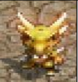

ITEM DOLL
각성
각성 인형 이미지, 옵션 정보입니다.
각성발라카스
단계 각성
옵션 근거리 데미지 +9 / 근거리 명중 +9 / 근거리 치명타 +7% / 스턴 명중 +9 / 64초당 MP회복 +15 / 경험치 보너스 +30%

각성안타라스
단계 각성
옵션 스턴 내성 +10 / 데미지감소 +10 / 64초당 MP회복 +35 / 경험치 보너스 +50%

각성린드비오르
단계 각성
옵션 원거리 데미지 +9 / 원거리 명중 +9 / 원거리 치명타 +7% / 스턴 내성 +9 / 64초당 MP회복 +25

각성파푸리온
단계 각성
옵션 SP +9 / 마법 명중 +9 / 스턴 내성 +9 / 64초당 MP회복 +50 / 경험치보너스 +30%